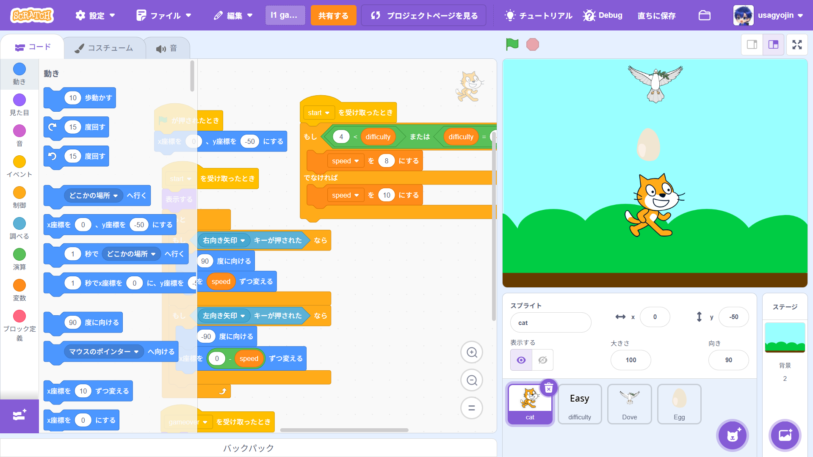

1-2 ゲーム

1.内容
学習した内容を説明する文章を
自分で考えて作成する（50文字以上．100文字程度を推奨．※生成AIを使ってはいけない）
2.感想
学習した内容を実践したときに自分が感じた感想を
自分で考えた文章で作成する（50文字以上．100文字程度を推奨．※生成AIを使ってはいけない）
また、自作のゲームをそのまま自分でやるだけでなく、友達とどこをどうアレンジしたか話し合うことで
よりよいものになっていったため、先生の「プログラマーは協力が大切である」という言葉を改めて実感した.